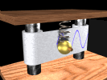

"The aim of science is not to open the door to
infinite
wisdom, but to set a limit to infinite error"
Bertolt Brecht
Oscillatory motion occurs when a force acts on a body in the
opposite
direction to its displacement (from its equilibrium position).
Some examples of oscillatory motion
Mass on a spring
Simple pendulum
Atoms vibrating in solid material
Resistive forces such as friction (damping) will cause all
oscillatory motion to cease, unless an external (driving) force is
applied.
If the magnitude of this restoring force (FR
) is proportional to the magnitude of the displacement (x) the
oscillation
is said to be Simple Harmonic Motion (SHM).

"The man who
invented the zip fastener was today honored with a lifetime
peerage. He will now be known as the Lord of the Flies."